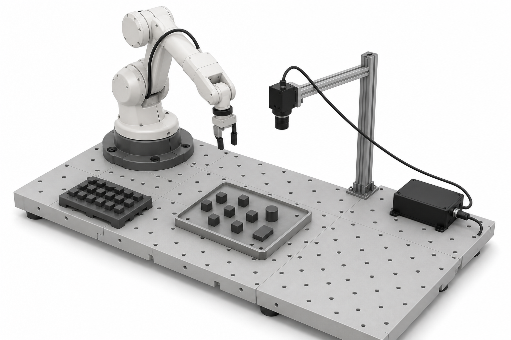
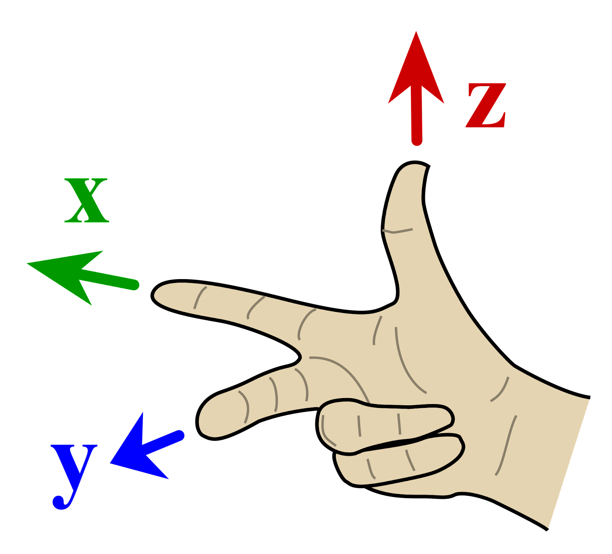

Frames and Poses
Why frames and poses matter
Many robot tasks are about motion and positioning. A tool has to approach a part, a gripper has to align with a handle, a camera has to measure a workpiece, or a pallet has to be placed relative to a fixture. To program and debug these tasks, we need tools for describing positions and orientations in space.
Consider the cell in the figure below. A camera observes a tray of small objects, and the robot has to move its gripper to a pick pose for one selected cube. To make that work, the robot program needs answers to questions such as: Where is the camera relative to the robot? Where is the selected cube relative to the camera? Where should the gripper be relative to the cube?
The concrete problem is that the robot does not directly know where the part is: the camera detects the part, but the camera and the robot do not use the same coordinate system. The robot expects TCP motion targets in its base frame, so the part pose reported in the camera frame must be converted into the robot base frame.

This example already contains the two basic ideas of the page:
- A coordinate frame is a local reference system with an origin and axis directions. In the figure, frames are attached to the robot base, camera, selected part, and gripper.
- A pose describes the position and orientation of one frame relative to another frame. For example, the camera has a pose relative to the robot base.
For robot tools, the important tool point is usually called the TCP: the tool center point. In the equations below, part is used as a short name for the selected workpiece frame.
A point is only a position. It can describe where a hole, corner, or detected feature is. A pose is stronger: it describes both position and orientation. A welding torch, gripper, camera, screwdriver, or dispensing nozzle must be at the right place and point in the right direction. Position is the “where”. Orientation is the “which way”.
Different robot systems expose poses in different formats. At this point, treat these formats as compact ways of writing a 3D position plus a 3D orientation. Section 3 explains the idea of a pose, and Section 3.3 returns to the practical difference between matrix notation, KUKA target values, and Universal Robots pose values.
In this page we use the notation from Corke (Corke 2023): T denotes a pose represented as a homogeneous transformation matrix. We will not derive all the matrix equations. The goal is to understand what the matrices mean and how they are used in practical robot programs.
Coordinate frames
A coordinate frame is attached to something. In a robot cell, typical frames are:
- the robot base frame,
- the tool frame or TCP frame,
- a fixture, part, or workobject frame,
- a camera frame,
- a frame attached to a conveyor, pallet, table, or machine.
In the pick cell above, we need at least four frames: the robot base frame, the camera frame, the selected workpiece frame, and the TCP frame of the gripper. This section first highlights one basic point: the selected part is one physical object, but its pose can be described relative to different reference frames. The camera detects the part relative to the camera frame, while the robot usually needs the target relative to the robot base. Later, in the chaining section, we also add the taught offset from the part frame to the TCP frame, because the robot should not move to the part origin itself but to a useful grasp pose. A common way to think about robot motion is therefore: the controller plans or executes the TCP frame moving in the robot base frame.
Coordinates are only meaningful together with the frame they are expressed in. The point (100, 50, 20) in the robot base frame is not the same physical point as (100, 50, 20) in the camera frame or the tool frame. The numbers are the same, but the reference frame is different. The relationship between two frames is described by a pose, which is introduced in Section 3.
In robot programming, frames are not just theory. They are fundamental for programming robot motion, because a program is often written relative to selected frames: move relative to this tool, this fixture, this workobject, or this robot base. These frames are often taught or calibrated:
- a tool frame is found by TCP calibration,
- a fixture or workobject frame can be taught from points on the real fixture,
- a camera frame is found by camera-to-robot calibration,
- robot targets are stored relative to a selected base, tool, or workobject.
In the pick cell, camera-to-robot calibration gives the camera frame relative to the robot base. TCP calibration gives the gripper frame. The vision system then reports a workpiece frame relative to the camera frame.
Because frames are essential for communicating position, orientation, and motion, the sign conventions must be unambiguous. Different robots, programs, simulators, and machines need to speak the same geometric language. If a camera system, robot controller, and simulation model disagree on what +x, +z, or a positive rotation means, the resulting target can be mirrored or rotated the wrong way. The standard convention in robotics is the right-hand convention, shown in Figure 1. The rule on the left fixes the positive axis directions of a 3D frame. The rule on the right fixes the positive rotation direction about an axis.

{kind=link}
After these conventions are fixed, axis labels tell you which direction each coordinate is measured in. The right-hand rules become especially useful when setting up a task in simulation or standing in front of a physical setup and trying to grasp what it means for a target to be +50 mm along an axis, or rotated positively about that axis.
Poses
A pose is the relationship between two frames. The notation \({}^{A}\!T_B\) means:
the pose of frame
B, expressed in frameA.
For example, \({}^{base}\!T_{camera}\) describes where the camera frame is relative to the robot base frame. \({}^{camera}\!T_{part}\) describes where the detected workpiece frame is relative to the camera frame. \({}^{part}\!T_{tcp}\) describes where the gripper TCP should be relative to the workpiece when the robot picks it.
The pose contains both:
- the position of the moving frame origin,
- the orientation of the moving frame axes.
This is also why the order of the frame names matters. \({}^{base}\!T_{camera}\) and \({}^{camera}\!T_{base}\) describe the same two physical frames, but in opposite directions. They are not the same matrix.
Inverting the direction of a pose
Sometimes the pose is known in the opposite direction from the one we need. If we know \({}^{base}\!T_{camera}\), we can compute \({}^{camera}\!T_{base}\) by inverting the transform:
\[ {}^{camera}T_{base} = \left({}^{base}T_{camera}\right)^{-1} \]
This is not just “put a minus sign on the position”. The orientation must also be inverted, and the translation must be interpreted in the rotated frame. The matrix form in Section 3.3 shows why. In practice, use the robot controller, simulation tool, or robotics library to invert poses. The important point is to recognize when the pose direction you have is not the pose direction you need.
Typical uses include converting a camera detection into the robot base frame, converting between fixture or workobject frames and the base frame, and checking where the robot base would appear from a camera or tool frame.
A short 2D version
Real industrial robots move in 3D. Still, a 2D top-view example is a useful training step because it keeps the same logic with fewer numbers.
In 2D, a pose has three coordinates:
\[ x, \quad y, \quad \theta \]
where x and y describe the position and theta describes the rotation of the frame. The corresponding homogeneous transformation matrix is:
\[ {}^{A}T_B = \begin{bmatrix} {\color{#c2410c}\cos \theta} & {\color{#c2410c}-\sin \theta} & {\color{#1d4f8e}x} \\ {\color{#c2410c}\sin \theta} & {\color{#c2410c}\cos \theta} & {\color{#2a9d8f}y} \\ 0 & 0 & 1 \end{bmatrix} \]
The first two columns describe orientation. The last column describes position. The last row is a mathematical trick used by homogeneous coordinates: it is always zeros followed by a 1, and it lets rotations and translations be combined in one matrix multiplication. For this course, you can use that last row as a fixed pattern without worrying too much about its derivation.
The demo below lets you explore the same matrix directly. Frame A stays fixed, while frame B is moved by changing x, y, and theta. The matrix shows how those three pose coordinates enter the transform. Use the direction buttons to switch between \({}^{A}T_B\) and the inverse pose \({}^{B}T_A\).
The 3D version used in robotics
In 3D, the same idea becomes a 4 by 4 homogeneous transformation matrix. A pose of frame B expressed in frame A is commonly written as:
\[ {}^{A}T_B = \begin{bmatrix} {\color{#0f766e}r_{11}} & {\color{#0f766e}r_{12}} & {\color{#0f766e}r_{13}} & {\color{#7c2d12}x} \\ {\color{#0f766e}r_{21}} & {\color{#0f766e}r_{22}} & {\color{#0f766e}r_{23}} & {\color{#7c2d12}y} \\ {\color{#0f766e}r_{31}} & {\color{#0f766e}r_{32}} & {\color{#0f766e}r_{33}} & {\color{#7c2d12}z} \\ 0 & 0 & 0 & 1 \end{bmatrix} = \begin{bmatrix} {\color{#0f766e}R} & {\color{#7c2d12}t} \\ 0\;0\;0 & 1 \end{bmatrix} \]
Here:
- the brown vector
t = [x, y, z]^Tis the position of the origin of frameB, measured in frameA, - the teal block
Ris a 3 by 3 rotation matrix that describes the orientation of frameB, measured in frameA, - the bottom row is the same homogeneous-coordinate trick: zeros followed by a
1.
A useful way to read the rotation matrix is column by column:
\[ R = \begin{bmatrix} | & | & | \\ {}^{A}\hat{x}_{B} & {}^{A}\hat{y}_{B} & {}^{A}\hat{z}_{B} \\ | & | & | \end{bmatrix} \]
The first column tells where the x axis of frame B points, expressed using frame A coordinates. The second and third columns do the same for the y and z axes. These three axis directions must be perpendicular and have unit length; otherwise the matrix no longer represents a valid rigid-body orientation.
Rotation is the part where formats differ most. Position is straightforward: three distances along three axes. Orientation is harder because a 3D rotation is not just three independent distances. The order of rotations matters, different parameter sets can describe the same physical orientation, and some representations become awkward near certain orientations. This is why robot controllers, simulation tools, and vision systems do not all display orientation in the same way.
Common representations include:
- Rotation matrix: good for calculation and frame chaining, but it uses nine numbers for only three rotational degrees of freedom. The columns also have to remain perpendicular unit vectors, so it is not a convenient format to type by hand.
- Euler, roll-pitch-yaw, or
ABCangles: compact and often easier to read on a teach pendant, but the result depends on the chosen rotation order. These formats can also have singular cases and angle wraparound, for example near+180and-180degrees. - Rotation vector / axis-angle: compact and useful in robot software. The vector direction gives the rotation axis and the vector length gives the rotation angle, usually in radians. The three numbers are not separate rotations about
x,y, andz, so they are less intuitive to edit by hand. - Unit quaternion: common in simulation, 3D graphics, and interpolation, but it uses four numbers with a unit-length constraint, and
qand-qdescribe the same orientation.
This is also why KUKA and Universal Robots do not just use different names for the same thing. KUKA targets commonly use X, Y, Z, A, B, C, where A, B, and C are angle-sequence orientation values. Universal Robots uses p[x, y, z, rx, ry, rz], where rx, ry, and rz form a rotation vector. In this page we write poses as transformation matrices because matrices make frame chaining and inversion easy to see. In a real robot program, the same pose may be shown as ABC angles, a rotation vector, or another orientation format, and the controller or software library converts between these representations.
With the matrix blocks above, the inverse pose from the previous section is:
\[ {}^{B}T_A = \left({}^{A}T_B\right)^{-1} = \begin{bmatrix} R^T & -R^T t \\ 0\;0\;0 & 1 \end{bmatrix} \]
This is the matrix reason why inverting a pose is not just changing the sign of the translation. The translation also has to be expressed in the inverted orientation.
The demo below shows the same pose idea in 3D. Frame A stays fixed, while frame B is moved with position sliders and roll-pitch-yaw sliders. Use the direction buttons to switch between \({}^{A}T_B\) and the inverse pose \({}^{B}T_A\). The sliders are only one convenient display format for orientation; the matrix below the plot is the pose representation used for chaining and inversion.
Combining poses
The most important operation with poses is chaining. If we know the pose of frame B relative to A, and the pose of frame C relative to B, then we can find the pose of C relative to A:
\[ {}^{A}T_C = {}^{A}T_B \; {}^{B}T_C \]
The superscript tells which frame the answer is expressed in. The subscript tells which frame is being described. When transforms are chained, the inside frame names must match. In the example above, the B at the end of \({}^{A}T_B\) matches the B at the start of \({}^{B}T_C\), leaving the outer frame names A and C. This is a practical rule for checking the multiplication order before sending a target to the robot.
If the two poses are written with rotation and translation blocks,
\[ {}^{A}T_B = \begin{bmatrix} R_{AB} & t_{AB} \\ 0\;0\;0 & 1 \end{bmatrix}, \qquad {}^{B}T_C = \begin{bmatrix} R_{BC} & t_{BC} \\ 0\;0\;0 & 1 \end{bmatrix}, \]
then the chained pose is:
\[ {}^{A}T_C = \begin{bmatrix} R_{AB}R_{BC} & t_{AB} + R_{AB}t_{BC} \\ 0\;0\;0 & 1 \end{bmatrix} \]
The formula shows why pose chaining is more than adding positions. The second translation \(t_{BC}\) is first rotated into frame A before it is added to \(t_{AB}\).
In the pick cell:
- Calibration gives the camera pose in the robot base frame: \({}^{base}\!T_{camera}\).
- The camera detects the part pose in the camera frame: \({}^{camera}\!T_{part}\).
- A taught grasp offset describes the TCP pose relative to the part: \({}^{part}\!T_{tcp}\).
The robot target in the base frame is then:
\[ {}^{base}T_{tcp} = {}^{base}T_{camera} \;{}^{camera}T_{part} \;{}^{part}T_{tcp} \]
In code, the operation often looks like this:
T_base_camera = calibrated_camera_pose()
T_camera_part = vision_detect_part()
T_part_tcp = taught_grasp_offset()
T_base_tcp_goal = T_base_camera @ T_camera_part @ T_part_tcp
move_l(T_base_tcp_goal)The exact syntax depends on the software environment. The important idea is the chain of frames. Each transform answers one local question, and the product answers the question the robot controller needs: where should the TCP go in the robot base frame?
The demo below shows the same idea as a pose graph. The nodes are frames, and the arrows are poses between frames. The animation highlights one arrow after another and highlights the corresponding transform in the equation. The point is not the numerical value of each pose, but the order in which the transforms are connected.
Practical mistakes to watch for
- Mixing frames: A coordinate measured in the camera frame is sent directly as a robot base target.
- Wrong multiplication order: The right transforms are used, but chained in the wrong order.
- Tool frame error: The TCP calibration is wrong, so all poses look correct in simulation but the real tool misses the part.
- Orientation convention error: A pose is copied between systems that use different angle conventions.
- Forgetting offsets: The part pose is detected correctly, but the robot is commanded to the part origin instead of to the required grasp, weld, or process pose.
When debugging frame problems, draw the frames and write the transform chain before changing robot targets. In the pick cell, this means checking the chain from base to camera, camera to workpiece, and workpiece to TCP before guessing which number has the wrong sign.
Exercises
In the pick cell, list at least four useful coordinate frames. What physical object is each frame attached to?
In the demo, follow the highlighted arrows. Which transform is known by calibration, which transform comes from vision, and which transform is a taught offset?
In the equation, why does \({}^{camera}\!T_{part}\) have to be placed after \({}^{base}\!T_{camera}\), not before it?
Write a transform chain for a robot that should place its gripper at a taught pick pose on a part detected by a camera.
If calibration gives \({}^{base}\!T_{camera}\) but a calculation needs \({}^{camera}\!T_{base}\), what operation is required? Why is it not enough to only change the sign of the translation?
A robot reaches every programmed target with the same position error, even though the targets look correct in the offline program. Which frame would you check first, and why?
Further reading
For a deeper treatment of coordinate frames, transformations, and homogeneous matrices, see Corke (Corke 2023, chap. 2). Robot Academy also has a useful visual introduction to 3D geometry.